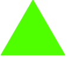

Students are introduced to a set-mapping representation for functions, in which the function object exists as a means of translating points
from a Domain into a Range. Coupled with their understanding of Circles of Evaluation, students generalize their understanding of functions to
include other datatypes, including Strings and Images.
Students will enter (evaluate) expressions for generating Strings and Images
Students will write down Contracts for arithmetic expressions, as well as several image-producing expressions
Standards and Evidence Statements:
Standards with prefix BS are specific to Bootstrap; others are from the Common Core. Mouse over each standard to see its corresponding evidence statements. Our Standards Document shows which units cover each standard.
A-SSE.1-2: The student interprets the structure of expressions to solve problems in context
interpretation of complicated expressions by viewing one or more of their parts as a single entity
F-IF.1-3: The student uses function notation to describe, evaluate, and interpret functions in terms of domain and range
description of a function using terms domain and range
N-Q: The student reasons quantitatively in using units to solve problems
correct interpretation of units consistently in formulas
BS-CE: The student translates between structured expressions as arithmetic, code, and Circles of Evaluation
translating a nested (multi-operation) equation into a Circle of Evaluation
translating a Circle of Evaluation into its equivalent programming syntax
BS-IDE: The student is familiar with using a REPL, entering expressions properly, and interpreting error messages
look to error messages as a way of diagnosing syntax errors
BS-PL.1: The student is familiar with declaring values and applying built-in functions using the programming language
representing (numeric, string, boolean, image, etc) values in the programming language
interpreting a function application and identifying its arguments
BS-PL.2: The student is comfortable using and writing Contracts for built-in functions
representing a function’s input and output using a contract
using a function by refering to its contract
Length: 90 Minutes
Glossary:
arguments: the inputs to a function; expressions for arguments follow the name of a function
contract: a statement of the name, domain, and range of a function
domain: the type of data that a function expects
error message: information from the computer about errors in code
function: a mathematical object that consumes inputs and produces an output
image: a type of data for pictures
name: how we refer to a function or value defined in a language (examples: +, *, star, circle)
produce: to compute a value from an expression
range: the type of data that a function produces
string: any sequence of characters between quotation marks (examples: "hello", "42", "this is a string!")
type: refers to a general kind of data, like Number, String, Image, or Boolean
value: a specific piece of data, like 5 or "hello"
Materials:
Editing environment (code.pyret.org)
Editing environment (WeScheme or DrRacket with the bootstrap-teachpack installed)
Practice the Circles of Evaluation, using the activity sheet on Page 7
in your workbook.
In each row, there is a mathematical expression written on the left-hand column.
Go through each of these expressions, and draw the Circle of Evaluation for each one in the second column.
Once you’ve converted each of them, go to the third column and convert each one into a program that can be entered on the computer. Don’t forget to check your parentheses, and to be careful about leaving a space between each input.
Make sure students have the opportunity to practice drawing Circles from the outside-in (beginning with a large Circle and filling it in), and from the inside-out (starting with the innermost expression, and building out).
This can be done as a team competition, with each round requiring teams of students to fill in each square of the activity sheet. Make sure you review after every round, to catch mistakes in understanding early.
Functions, Strings, and Images
Overview
Students extend the Circle of Evaluation metaphor to include new functions and datatypes.
Learning Objectives
Students will be able to use functions that produce Images
Students will understand the concept of datatype
Students will understand that each value has a datatype
Students will understand that datatypes describe a function’s inputs and outputs
Evidence Statementes
When given Circles of Evaluation for novel expression, functions and datatypes, students will be able to apply the rules for converting Circles of Evaluation into code
Students will be able to identify what each argument to an image-producing function means
Students will be able to write expressions that generate simple images (triangles, circle, stars, etc)
Given a value, students will be able to identify its datatype
Given an expression, students will be able to identify the datatype it will evaluate to
Students will be able to distinguish between types and values
Product Outcomes
Students will enter (evaluate) expressions for generating Strings and Images
Materials
Editing environment (code.pyret.org)
Preparation
Student Workbooks, and something to write with.
Functions, Strings, and Images(Time 20 minutes)
Functions, Strings, and ImagesThe Circles of Evaluation are a powerful tool, and can be used for much more than just numbers.
Consider the Circle of Evaluation shown here.
(star 50"solid""red")
For this Circle, there is a name, star, rather than an operator (like + or -) at the top. We say that this kind of circle uses a function name at the top, rather than an operator.
To convert a circle like this to Pyret code, we
have a different rule than for operators. First, we
write the function name, followed by an open
parenthesis (, followed by the expressions
in the circle separated by commas, followed
by a close parenthesis ). The example above
would translate to
We say that the expressions separated by commas are
the arguments that are given to the
function.
How many arguments are being given to the function?
What do you think this function will do?
Students are not expected to know all the answers here - the goal is for them to apply what they know about Circles to a novel expression, and discuss for themselves what they think it might mean. Ask them to justify their answers, and to explain why they think they are correct. Linking this back to earlier examples of Circles of Evaluation may be useful.
Type this code into the Interactions window, and hit "Return". What did you get back?
What does the star function do?
Type the expression again, but this time use a much larger number in place of 50. What does the first argument tell the computer?
Type the expression again, this time using "outline" in place of "solid", being careful to keep the quotation marks! What does the second argument tell the computer?
Now replace "red" with something else (again, keep the quotation marks!). What does the third argument tell the computer?
The function star takes the three arguments and uses them
to construct an image! Functions will consume one or more
values and use them to construct new ones; in this case an image.
This is related to operators (like + and -)
which take two number values and produce a new number based on
those values.
This activity is designed to get students playing with new terms and concepts, so they develop their own model for what’s going on. At this point, it is NOT essential that students understand every last component of the code. If you need to give away lots of code snippets, that’s ok - just get them playing!
There’s an entirely new type of value being used in these expressions: "solid" and "red" are examples of a completely new datatype, called a String.
A String is anything between quotation marks.
Students should see Strings as an analog to Numbers: a different type of value, but one that is still a simple program that evaluates to itself and can be passed as an argument to a function. Note that the Number 42 and the String "42" are different values! You could add the Number 42 to another number, but you cannot add the String "42" to another number.
When you first learned about values, you saw that a program can be nothing more than a value, such as a number.
If you type a number into the interactions window, for example, it evaluates to itself. To remind yourself of this,
try evaluating 716 in the Interactions window.
What do you expect to get back?
Since Strings are values too, the value "red" is also a perfectly valid program! Just like number values, strings will evaluate to themselves.
Try entering different Strings into the Interactions window. What happens if you put quotes around multiple words? Around Numbers?
This expression also included a new function called star. Similar to how the addition operator + takes in two Numbers, star takes in a Number and two Strings, and produces a new type of data, called an Image. The way we use functions is different than operators (name, then arguments separated by commas in parentheses), but they do similar things.
What is the datatype of each of the values listed below – Number, String or Image?
42
"Hi, mom!"
9273482.42

"84729"
"Strings and Numbers are two different datatypes"
Students have now seen three datatypes: Numbers, Strings and Images. You’ll want to make sure students can correctly identify examples of each one.
You’ve also seen expressions that produce values, such as (16 * 4), which produces a Number. Other expressions, however, can produce Strings or Images.
What type of data will each of the expressions listed below evaluate to?
((7 + 2) / 3)
star(500, "solid", "purple")
star((1 + 3), "outline", "blue")
((4 * 2) - (1 + 0))
For added practice, have students identify the type of each argument in each of those expressions. Going Further - If time allows, you can go further into Manipulating Images or Making Flags.
Some of the items listed below are types, while others are values. Can you tell the difference?
792.24
String
"hi, mom!"
"91"
Number
Image
102
Functions can work with just numbers, also. For example,
the num-sqr function squares a function, multiplying
it by itself. An example of using it is:
What does this produce if you run it in the interactions window?
Draw the circle of evaluation that corresponds to this expression.
Contracts
Overview
Students learn to describe functions and their behavior, using formalisms including Contracts (Domain and Range) and Datatypes.
Learning Objectives
Students will start to write and use Contracts, which summarize the name, range, and domain of a function
Students will learn how to use a function based on the information in its Contract
Evidence Statementes
Given an expression, students will be able to identify the name of the function being used
Given an expression, students will be able to identify how many arguments are used
Given a value, students will be able to identify its type
Students will be able to identify the parts of a contract
Students will be able to distinguish between contracts and function calls
Given an example of a function being applied, students will be able to write a contract for that function
Product Outcomes
Students will write down Contracts for arithmetic expressions, as well as several image-producing expressions
Materials
Editing environment (WeScheme or DrRacket with the bootstrap-teachpack installed)
Preparation
Computer for each student (or pair), running WeScheme or DrRacket
Student Workbooks, and something to write with
Contracts(Time 35 minutes)
ContractsNow we’ve seen two functions: num-sqr, which takes in a number and produces a number, and star, which takes in a Number and two Strings, and produces an Image.
Different functions take in different
inputs, and we need a way to keep track of the requirements for each function.
The Domain of a function is the data that the function expects.
Why is it helpful to know the Domain of a function?
By keeping a list of all the functions in a language, and their Domains, programmers can easily look up
how each function is used. However, it’s also important to keep track of what each function produces!
For example, a program wouldn’t use star if they were trying to produce a Number, because
star only produces Images.
The Range of a function is the data that the function produces.
Domain and Range are critical concepts. They can be reinforced by modifying a simple expression
(such as (+ 1 2)), asking questions at every step. For example, we know that +
takes two Numbers, which is why 1 and 2 are used in the example. However, each of those values
could be replaced by another expression – as long as that expression evaluates to a
Number. Have students systematically replace each value with an expression, asking them to
justify their replacement using the Domain and Range of each function.
Domains and Ranges help programmers write better code, by preventing silly mistakes and giving themselves
hints about what to do next. A programmer who wants to use star can look up the Domain and
immediately know that the first input has to be a Number (like 100), without having to remember
it each time. Instead of writing a single value there, a programmer could write a whole expression,
like (25 * 4). We know this code will evaluate to an appropriate value (Number) since its an operator, therefore, the result of * can be used in place of any Number value.
When programmers write down the Domains and Ranges of each function, they write what are
called contracts, to keep track of what each function needs.
A Contract has three parts: the Name, Domain and Range of a function.
The contract for star is:
This means that the Name of the function is star, that it takes in a Number and two Strings as its
Domain, and produces an Image as the Range. We use types instead of values when we write a Contract, because we
want to be more general: a star could be of any size, so the Domain for star specifies that the first
argument could be any Number. If we think of a language as a collection of lego pieces, the Contracts
are like the tabs and slots that tell us how each piece can connect.
Contracts are sufficiently important and useful that we should keep a list of them somewhere.
The back pages of your workbook contain a sheet labeled "Contracts". Write the contract for
star in the first row of your contracts table.
Common mistakes when students first write down contracts include: writing values (such as "red")
instead of types (such as "String") and forgetting arguments. Read your students’ contracts carefully,
as they often indicate misconceptions that will persist and affect them later on.
Here is the contract for a new function:
What is the Name of this function?
How many things are the Domain of this function?
What is the type of each thing in the Domain?
What is the Range of this function?
A Contract tells you exactly how to use the function, by writing its Name and then using values for
each of the arguments in the Domain. Here is an example of an expression, written to use rectangle:
What do you think this code will produce?
Have students experiment with changing the argument values, always drawing attention back to the Domain.
By writing down the Contracts for our functions, we can easily look back to see how they are used.
The Contract for num-sqr is shown below.
Can you write the Contract for num-sqrt, which takes the square root of a number?
Now that you know how to use a Contract to write an expression, here are the Contracts for several new functions that produce Images:
See if you can figure out how to use these new functions to draw
other shapes! Here’s an example to get you started: ellipse(50, 100, "solid", "blue")]
You should start pushing students to write more sophisticated expressions,
replacing Number values with entire expressions (e.g. star((10 * 5), "solid", "purple")).
Students should be comfortable looking at an entire subexpression as a single
argument to the surrounding function.
You may want to insist that students to write these Contracts into their notebooks
BEFORE allowing them to play with them. Be careful about letting students rush to
the keys without first taking notes!
Here is an expression that uses a very interesting function: image-url("http://bootstrapworld.org/images/icon.gif").
This function takes in the URL of any image you can find online, and will produce that image so that you can use it in your program.
What are the three parts of a Contract?
What is the Name of this new function?
How many things are in its Domain?
What is the Domain of this function?
What will this expression evaluate to?
If you want to have students practice using bitmap/url, it is recommended that you use an image search-engine,
such as Google Images or Bing Images.
Make sure that students know how to get the URL for the image itself, not the URL of the web page that contains the image.
Contracts help programmers write code, so it’s always a good idea to write down contracts for each function you see.
Can you figure out the contract for a function, just by looking at
some sample code? Look at the function being used here: text("Bootstrap", 30, "purple"),
and see if you can write the Name, Domain and Range for that function.
Make sure you don’t confuse the Contract for a function with code! Some of the items listed below are
Contracts, but others are just examples of those functions being used. Can you tell which is which?
triangle :: Number, String, String -> Image
triangle(100, "outline", "blue")
square((200 + 5), "solid", "red")
square :: Number, String, String -> Image
Often, we make mistakes when we write code, and we use a value that violates the contract. Fortunately,
the computer identifies such cases and provides error messages to help us find and correct the problem.
An error message highlights the code containing the error and explains where the computer found a problem.
For each of the following incorrect expressions, look at the code
and see if you can figure out what is wrong about it. Then, type the
code into the Interactions Window and see what error message you get.
Does the error identify the same problem that you did?
(4 + "hi")
(+ "hi" "mom")
((4 + 5) * "pizza")
star("40" "solid" "red")
star("solid", "red", 40)
star("40", "solid", "red")
star(40, "red", "solid")
star(40, "solid", "yelow")
star((4 * 10), "blue")
cirle(25, "outline", "blue")
Controlled practice with error messages helps students gain confidence in dealing with them later on.
It is fine if students don’t spot the errors for themselves at first, though having students explain
the problems in their own words should reinforce correct use of these functions later
in the course.
Being an expert at reading error messages is an important part of being a good programmer! Reading
error mesages is like having a teacher or a friend help you with something you are working on, rather
than just saying "wrong!" every time you make a mistake. If you get really good at reading these
messages, you can even use them to discover functions you never knew existed!
Here are the names of some other image-producing functions, but how do they work? Try to
figure out how they are used on the computer, by experimenting and reading the error
messages. Can you discover their Domain and Range?
rhombus
right-triangle
radial-star
star-polygon
There are also a number of functions that take in Images as their input. For example,
suppose you want to flip an image from left-to-right, so that it points in the opposite
direction. You can use the function flip-horizontal, which has an
Image as both its Domain and Range. See the Contract (and an example of the function) below:
Functions that take Images as their inputs are often very difficult for students at first, because they absolutely require
that students really understand function composition. If a student is struggling with this concept, have them draw out
the Circle of Evaluation for the example here, and then convert it to code.
For each of the following functions, write the Contract in your workbook and experiment with the sample code.
Can you figure out what each function does to its Image?
As before, urge struggling students to draw out the Circle of Evaluation for each of these.
Closing
Overview
Learning Objectives
Evidence Statementes
Product Outcomes
Materials
Preparation
Closing(Time 5 minutes)
ClosingThis lesson expanded what you know about Circles of Evaluation, expressions, and code to include Strings and Images.
You learned that everything you knew about functions on Numbers also works on Strings and Images (which will make your
programs more interesting). You also learned how to use the Image functions to create your own images, and how to
use existing Images in your programs (through bitmap/url).
Have students volunteer what they learned in this lesson
Reward behaviors that you value: teamwork, note-taking, engagement, etc
Pass out exit slips, dismiss, clean up.
In the next unit, you’ll learn how to create your own functions to save work in writing expressions (this will turn
out to be an essential part of writing a game). You’ll also start customizing your game with images for the elements
in your game design.